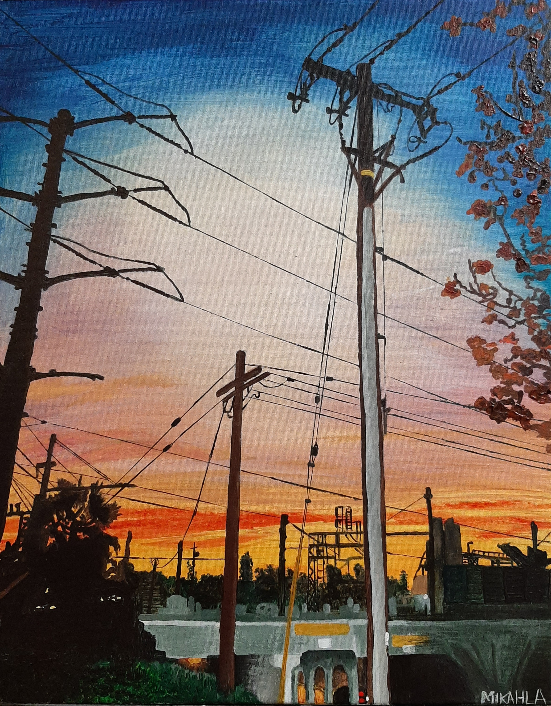

In The Black Gallery At San Jose State
This is a painting titled Frankie's Westside San Jose Sunset, painted in Acrylic on canvas.
---Next page--->


This painting was done with a mixture of a pallet knife and a paintbrush, using both tools
Do you want to see painting of trash? ---Next page--->
To Go Back to Yellow Sunset Press here